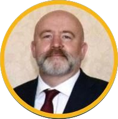

Professor Mark Lee
Room 136
School of Computer Science
University of Birmingham
B15 2TT, United Kingdom
m.g.lee@bham.ac.uk
My research interests are focussed on Natural Language Processing. I have specific interests in Sentiment Analysis, Semantics/Pragmatics of natural language, especially figurative language, and applications in Medical Informatics.
Natural Language Processing has been transformed by the application of deep neural models and in particular large language models and other transformer-based methods to capture rich semantic information. My current interests are 1) in the theoretical understanding of what kinds of linguistic information can be captured 2) developing practical applications using these models, notably in healthcare and psychology.
I supervise the following PhD students:
Prachi Shah Joint Project with Psychology
Rizwan Idrees Extraction of Biomedical Information from Text
Shareefa Alamer Event Detection in Natural Language
Previous PhD Students:
Dr. Ghadi Alnafesah Using Semantic Richness for Metaphor Detection Using Deep Learning (2024)
Dr. Alaa Alharbi Event Extraction from Text (2023)
Dr. Tuba Gokhan Graph-based Text Abstraction (2023)
Dr. Abdullah Alharbi Detecting Emotional Intensity in Text (2023)
Dr. Fuad Mire Hassan Fake News Detection (2021)
Dr. Harish Madabushi Deep knowledge structures for Question Answering (2019)
Dr. Juntao Yu Out of Domain Dependency Parsing (2018)
Dr. Mohab Elkaref Deep Learning applications for Dependency Parsing (2018)
Dr. John Saxon Using Traceability in Model-to-Model to improve Software Quality (2018)
Dr. Nur Hana Samsudin Polyglot Speech Synthesis (2017)
Dr. Mohammed Alkalai Table Extraction for Mathematical Documents(2015)
Dr. Khalid Abdulrahman Reducing out-of-vocabulary in morphology to improve the accuracy in
Arabic dialects speech recognition (2015)
Dr. David Brooks Unsupervised Natural Language Syntax Induction from Corpora (2007)
Dr. Daniel Winchester Cross-document coreference and proper names (2005)
External Examiner Appointments:
School of Engineering Mathematics and Technology, University of Bristol (2023- )
Dept of Computing, Sheffield Hallam University (2020-2024)
International Study Centre, University of Sussex (2018-2022)
School of Computing, University of West London (2014-2019)
School of Engineering and Informatics, University of Bradford (2014-2018)
Information School, University of Sheffield MSc. Information Systems (2011-2014)